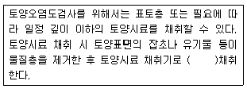
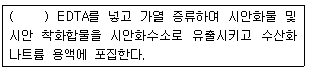
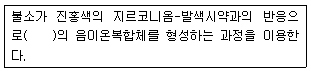
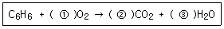
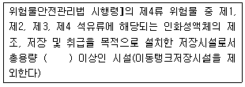
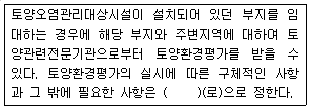
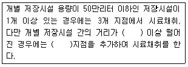

토양환경기사 (2012-09-15 기출문제)
1과목: 토양학개론
1. 대기 중에 있는 공기 성분 조성과 토양 공극 중 기체성분(토양공기)조성의 차이를 가장 옳게 설명한 것은? (단, 조성 부피(%) 기준)
- 대기 중 공기와 비교하였을 때 토양 공기 중 탄산가스 조성은 낮다.
- 대기 중 공기와 비교하였을 때 토양 공기 중 산소 조성은 낮고 탄산가스 조성은 높다.
- 대기 중 공기와 비교하였을 때 토양 공기 중 산소와 탄산가스 조성은 높다.
- 대기 중 공기와 비교하였을 때 토양 공기 중 메탄 조성은 높으나 탄산가스 조성은 낮다.
(정답률: 95%)

2. 물리학적으로 구분된 토양수분 중 흡습수 외부에 표면장력과 중력이 평형을 유지하여 존재하는 물로 pF가 2.54~4.5 범위에 있는 것은?
- 결합수
- 유효수분
- 중력수
- 모세관수
(정답률: 96%)
3. 토양생성작용을 거의 받지 않은 모재층으로서 칼슘, 마그네슘 등의 탄산염이 교착상태로 쌓여 있거나 위에서 녹아 내려온 물질이 엉키어 쌓인 토양층위는?
- O층
- D층
- R층
- C층
(정답률: 95%)
4. 최초의 유기물 60mmol이 있었다. 미생물의 활성에 의하여 12시간 후에 40mmol이 남았다면 반감기는? (단, 1차 반응 기준)
- 18시간
- 21시간
- 24시간
- 28시간
(정답률: 82%)
5. 양이온교환작용과 기본원리에 관한 내용으로 옳지 않은 것은?
- 양이온의 흡착의 세기는 양이온의 전하가 증가할수록 증가한다.
- 양이온의 흡착의 세기는 양이온의 수화반지름이 클수록 증가한다.
- 양이온의 흡착의 세기는 교환체의 음전하가 증가할수록 증가한다.
- 양이온교환반응은 화학량론적이며 가역적인 반응이다.
(정답률: 89%)
6. 다음 중 비점오염원(non point contaminant source)으로 가장 적합한 것은?
- 축산 배수 배출원
- 공단 산업폐수 배출원
- 도로 노면 배수
- 유류저장고
(정답률: 95%)
7. Kaolinite 광물에 관한 내용으로 옳지 않은 것은?
- 규소사면체층과 알루미늄팔면체층이 1:1로 결합된 광물이다.
- 고온 다습한 열대지방의 심하게 풍화된 토양에서 발견되는 중요 점토광물이다.
- 동형치환이 거의 일어나지 않는 것으로 알려져 있다.
- 다른 규산염광물에 비해 물분자가 쉽게 스며들어 건조와 수화가 용이하다.
(정답률: 74%)
8. 어느 지역의 토양공극률이 0.42 이며 토양입자밀도는 2.65g/cm3 로 알려져 있다. 이 지역 토양단위용적밀도는?
- 1.24 g/cm3
- 1.54 g/cm3
- 1.72 g/cm3
- 1.83 g/cm3
(정답률: 82%)
9. 어떤 유기용제 25L가 토양으로 유출되었다. 이로 인해 발생된 오염 지하수의 부피는 200m3이었고 지하수내 유기용제의 농도는 90mg/L이었다. 유기용제의 밀도가 0.9mg/mL 일 때 토양내 잔존하는 유기용제의 양(L)은? (단, 유기용제의 분해는 고려하지 않음)(오류 신고가 접수된 문제입니다. 반드시 정답과 해설을 확인하시기 바랍니다.)
- 2
- 3
- 4
- 5
(정답률: 55%)
10. 토양목(order)중 부분적으로 또는 심하게 분해된 수생식물의 잔재가 얕은 연못이나 습지에서 퇴적되어 형성된 토양을 포함한 유기질 토양은?
- Histosol
- Inceptisol
- Spodosol
- Oxisol
(정답률: 100%)
11. 토양의 체분석 결과 D10=0.⑤mm, D30=0.25mm, D60=0.75mm 으로 나타났다. 이 토양의 곡률계수(Cz)는? (단, 입도 분포 곡선 기준)
- 0.43
- 0.89
- 1.34
- 1.67
(정답률: 89%)
12. 자유면 대수층이 발달한 지역에서 공극률이 0.3, 비산출률이 0.3이고 유역면적이 150km2 이며 수위강하를 6m 만 허용할 때 지하수 개발 가능량은? (단, 자유면 평균 두께 : 100m)
- 2.7×107m3
- 2.7×108m3
- 8.1×107m3
- 8.1×108m3
(정답률: 65%)
13. 비위생 매립장에 위치한 폐기물을 수거한 후 토양 조사를 실시하여 보니, 6가 크롬 농도가 3mg/kg 이었고 이 농도에 해당하는 토양은 1250ton 이었다. 처리해야 할 6가 크롬의 양(kg)은? (단, 완전 처리 기준)
- 3.45
- 3.75
- 4.25
- 4.55
(정답률: 90%)
14. 토양에 존재하는 이온의 반경별 크기가 큰 순서대로 나열된 것은?
- Ba++＞Sr++＞Ca++＞Mg++
- Ba++＞Ca++＞Sr++＞Mg++
- Ca++＞Ba++＞Sr++＞Mg++
- Ca++＞Ba++＞Mg++＞Sr++
(정답률: 75%)
15. 어떤 지역에서 내리는 연간 강수량이 1000mm 이고 이중 18%가 지하로 함양된다. 또한 이 지역의 비산출율이 0.3일 때 지하로 함양된 강수가 자유면 대수층으로 침투하면 상승하는 지하수위는?
- 1.2m
- 0.9m
- 0.6m
- 0.4m
(정답률: 80%)
16. 토양오염의 특징과 가장 거리가 먼 것은?
- 타 환경인자와의 영향관계의 모호성
- 피해발현의 급진성
- 오염영향의 국지성
- 오염의 비인지성
(정답률: 100%)
17. 토양 오염물질인 비소에 관한 내용으로 옳지 않은 것은?
- 비소의 이동성은 Fe＞As 비의 감소에 따라 줄어든다.
- 비소는 자연 상태의 pH에 따라 존재형태가 변화하게 된다.
- 비소는 유기 황, 질소, 탄소화합물과 결합하는 성질을 가지고 있다.
- 호기성 토양에서 5가 비소형태로 대부분 존재한다.
(정답률: 77%)
18. 벤젠(분자량: 78)이 공기와 평형관계에 있을 경우 공기내 존재할 수 있는 최대농도는? (단, 1기압, 25℃ 기준, 벤젠의 증기압은 0.125atm)
- 약 400,000 mg/m3
- 약 450,000 mg/m3
- 약 500,000 mg/m3
- 약 550,000 mg/m3
(정답률: 64%)
19. 토양의 입단(粒團)에 관한 내용으로 옳지 않은 것은?
- 작은 토양입자들이 서로 응집한 덩어리 형태의 토양을 말한다.
- 수분 보유력과 통기성 저하의 원인이며 식물 생육에 문제를 발생시킨다.
- 음으로 하전된 점토 사이에 다가 양이온이 위치하여 정전기적인 힘에 의해 점토가 서로 끌리는 현상에 의해 입단이 일어난다.
- 양으로 하전된 점토와 음으로 하전된 점토가 서로 끌리는 현상에 의해 입단이 일어난다.
(정답률: 95%)
20. 옥탄올-물 분배계수에 관한 설명으로 옳지 않은 것은?
- 옥탄올-물 두 환경에서 옥탄올 층의 화학물질 농도와 물 층의 화학물질 농도의 비로 정의 된다.
- 적은 양의 데이터로부터 결정될 수 있으므로 매우 폭 넓게 이용된다.
- 옥탄올-물 분배계수의 값이 큰 화학물질은 친수성이며 일반적으로 자연환경에서 이동성이 좋다.
- 수생 유기체에 의해 화학물질이 얼마나 소모될 지를 알려주는 중요한 지표이다.
(정답률: 95%)
2과목: 토양 및 지하수 오염조사기술
21. TPH(석유계 총탄화수소)의 분석(기체크로마토그래피)에 관한 내용으로 옳지 않은 것은?
- 토양 중에 비등점이 높은(150℃~500℃) 유류에 속하는 제트유, 등유, 경유, 벙커C유, 윤활유, 원유 등의 측정에 적용
- 사염화탄소로 추출하여 정제
- 정량한계는 석유계총탄화수소로 10mg/kg
- 불꽃이온화검출기를 사용
(정답률: 72%)
22. 폐놀류를 기체크로마토그래피로 정량할 때 추출용액은?
- 아세톤/메틸알콜(1:1)
- 사염화탄소/메틸알콜(1:2)
- 아세톤/노말헥산(1:1)
- 사염화탄소/아세톤(2:1)
(정답률: 83%)
23. 저장물질이 없는 누출검사대상시설을 비파괴검사할 때 사용되는 초음파두께 측정기 장비 기준은?
- 정기적으로 교정되고 10분의 1 밀리미터 이상의 분해능을 갖는 것이어야 한다.
- 정기적으로 교정되고 100분의 1 밀리미터 이상의 분해능을 갖는 것이어야 한다.
- 정기적으로 교정되고 1000분의 1 밀리미터 이상의 분해능을 갖는 것이어야 한다.
- 정기적으로 교정되고 10000분의 1 밀리미터 이상의 분해능을 갖는 것이어야 한다.
(정답률: 85%)
24. 다음은 시료의 채취에 관한 내용이다. ( )안에 옳은 것은?

- 약 100g
- 약 200g
- 약 500g
- 약 1000g
(정답률: 95%)
25. 시안분석(자외선/가시선 분광법)에 대한 내용으로 옳지 않은 것은?
- 620 nm에서 흡광도를 측정한다.
- 각 시안화합물의 종류를 구분하여 정량할 수 없다.
- 잔류염소가 함유된 시료는 잔류염소 20mg당 L-아스코르빈산(10%) 0.6mL를 넣어 제거한다.
- 황화합물이 함유된 시료는 아비산나트륨용액(10%)을 2mL 넣어 제거한다.
(정답률: 85%)
26. 저장물질이 없는 누출검사대상시설-가압시험법에 사용되는 검사기기 및 기구에 관한 기준으로 옳지 않은 것은?
- 압력계(압력자기기록계): 최소눈금이 시험압력의 0.5% 이내이고 이를 읽고 측정압력의 기록이 가능한 압력계이어야 한다.
- 온도계: 시험압력에 충분히 견딜 수 있는 것으로서 최소눈금 1℃ 이하를 읽고 기록이 가능한 온도계 이어야 한다.
- 안전밸브: 0.7kgf/cm2 이하에서 작동되어야 한다.
- 가압장치: 불활성가스 용기 및 압력조정장치를 말한다.
(정답률: 79%)
27. 불소의 정량을 위한 시험방법으로 옳은 것은? (단, 토양오염공정시험기준 기준)
- 기체크로마토그래피법
- 이온전극법
- 원자흡수분광광도법
- 유도결합플라즈마-원자발광광도법
(정답률: 85%)
28. 유리전극법으로 수소이온농도를 측정할 때 간섭물질에 관한 설명으로 옳지 않은 것은?
- 토양을 오랫동안 방치하면 미생물의 작용으로 탄산 가스가 발생하여 pH가 낮아질 수 있다.
- 유리전극은 일반적으로 색도, 탁도 등에 간섭을 받는다.
- 토양 중 염류의 농도가 높아지며 pH 값이 낮아지는 경우가 있다.
- pH는 온도변화에 따라 영향을 받는다.
(정답률: 89%)
29. 저장물질이 없는 누출검사대상시설의 가압시험법에서 판정기준으로 가장 적절한 것은?
- 압력강하가 시험압력의 3%를 초과하는 경우에는 불합격으로 한다.
- 압력강하가 시험압력의 5%를 초과하는 경우에는 불합격으로 한다.
- 압력강하가 시험압력의 10%를 초과하는 경우에는 불합격으로 한다.
- 압력강하가 시험압력의 15%를 초과하는 경우에는 불합격으로 한다.
(정답률: 85%)
30. 방울수란 20℃에서 정제수 20방울을 적하할 때 그 부피가 얼마 되는 것을 뜻하는가?
- 약 0.5mL
- 약 1.0mL
- 약 2.0mL
- 약 5.0mL
(정답률: 91%)
31. 다음은 자외선/가시선 분광법을 적용한 시안 시험 방법에 관한 내용이다. ( )안에 옳은 내용은?

- pH 2 이하의 산성에서
- pH 4 이하의 산성에서
- pH 10 이상의 알칼리에서
- pH 12 이상의 알칼리에서
(정답률: 65%)
32. 토양정밀조사 단계 중 오염토양 정화 및 토양오염 방지를 위한 조치가 필요한 지역의 오염물질종류, 오염면적 및 오염범위 등을 파악하기 위한 사전 개략 조사는?
- 개황조사
- 기초조사
- 상황조사
- 자료조사
(정답률: 88%)
33. 유도결합플라스마-원자발광분광법으로 카드뮴을 측정할 때 정량한계는?
- 0.02mg/kg
- 0.⑤mg/kg
- 0.1mg/kg
- 0.5mg/kg
(정답률: 27%)
34. 다음은 자외선/가시선 분광법으로 토양 중 불소를 측정하는 방법이다. ( )안에 옳은 내용은?

- 적색
- 청색
- 무색
- 황갈색
(정답률: 90%)
35. 다음 중 0℃에서 가장 높은 pH값을 나타내는 표준액은?
- 탄산염 표준액
- 붕산염 표준액
- 인산염 표준액
- 수산염 표준액
(정답률: 67%)
36. 토양정밀조사결과를 오염등급에 따라 4등급(Ⅰ, Ⅱ, Ⅲ, Ⅳ)으로 구분하는 경우, '토양오염대책기준 초과지역'의 등급기준을 나타내는 색은?
- 빨강색
- 청색
- 노란색
- 검정색
(정답률: 90%)
37. 다음 용어에 대한 정의로 옳지 않은 것은?
- “진공”이라 함은 따로 규정이 없는 한 15mmH2O 이하를 말한다.
- “약”이라 함은 기재된 양에 대하여 ±10% 이상의 차가 있어서는 안된다.
- “정확히 취하여”라 하는 것은 규정한 양의 검체 또는 시액을 홀피펫으로 눈금까지 취하는 것을 말한다.
- “밀폐용기”라 함은 취급 또는 저장하는 동안에 이물질이 들어가거나 또는 내용물이 손실되지 아니하도록 보호하는 용기를 말한다.
(정답률: 96%)
38. 토양오염 위해성평가의 내용과 가장 거리가 먼 것은?
- 노출평가
- 영향평가
- 독성평가
- 위해도 결정
(정답률: 71%)
39. 저장물질이 있는 누출검사대상시설-기상부의 시험법 중 미감압법 측정방법으로 옳지 않은 것은?
- 증기압이 높은 내용물(가솔린류)을 저장하는 누출 검사 대상시설에 있어서는 기상부의 공간용적이 3000L 이상인지를 확인한다.
- 시험을 위한 진공속도는 매분 100mmH20 이상이 되도록 한다.
- 압력 측정기간 동안 저장내용물의 온도는 0~30℃ 범위 이내에서만 측정한다.
- 누출여부에 대한 추가확인을 위하여 마이크로폰 등 추가적인 도구를 사용할 수 있다.
(정답률: 90%)
40. 원자흡수분광광도법으로 니켈을 측정할 때 정밀도(% RSD) 기준은?
- 10% 이내
- 20% 이내
- 25% 이내
- 30% 이내
(정답률: 90%)
3과목: 토양 및 지하수 오염정화 기술
41. 유기오염물질로 오염된 사질 대수층이 있다. 수리 전도도가 3.0×10-3cm/sec, 유효 공극율이 0.3, 수두 구배가 0.01 일 때 오염운의 평균 이동속도는? (단, 흡착 등에 의한 지연은 고려하지 않는다.)
- 10-3 cm/sec
- 10-4 cm/sec
- 10-5 cm/sec
- 10-6 cm/sec
(정답률: 60%)
42. 투수성 반응벽체(PRB)공정에 관한 설명으로 옳지 않은 것은?
- 산성광산폐수에서 방사선동위원소까지 오염된 지하수에 포괄적으로 적용된다.
- 오염지역 밖으로 지하수의 이동을 막는 것이 아니라 오염물질만의 이동을 막는다.
- 자연유하를 의존하기 때문에 깊은 수층과 오염운을 가진 부지 적용이 적합하다.
- 투수성 반응벽은 오염된 지하수를 복원하기 위해 반응기질로 채워진 지중벽체이다.
(정답률: 58%)
43. 바이오파일의 장단점으로 옳지 않은 것은?
- 설계 및 운영이 쉽다.
- 휘발물질 유출방지가 가능하다.
- 배기가스 처리가 필요 없다.
- 지하수오염 방지 라이너시설이 필요하다.
(정답률: 91%)
44. 토양세척기법(soil washing)이 가장 효과적인 토양은?
- 점토가 주를 이루는 토양
- 모래와 자갈이 고루 섞인 토양
- 실트와 모래가 고루 섞인 토양
- 점토와 실트가 고루 섞인 토양
(정답률: 77%)
45. 토양세척의 장ㆍ단점으로 옳지 않은 것은?
- 무기물과 유기물을 동시에 처리할 수 있다.
- 토양 유기물함량이 높을수록 토양세척효율이 높아진다.
- 비교적 다양한 오염 토양 농도에 적용가능하며 오염 토양의 부피를 급격히 줄일 수 있다.
- 선별된 미세 오염토양 및 오염유출수는 부가적인 처리가 필요하다.
(정답률: 87%)
46. 토양정화기술 중 열탈착법의 장단점으로 옳지 않은 것은?
- 부지 내 및 부지 외 처리가 가능
- 비교적 많은 오염토양처리 시 경제성 있음
- 전처리 없이 수분함량이 높은 오염토양 처리
- 고농도 hot spot 처리가능
(정답률: 85%)
47. Bioventing 법을 실험하기 위하여 40% 공극률을 가진 토양 1000m3에 1000m3/day 의 공기를 주입하였다. 주입공기의 산소농도는 21%이며 배기가스의 산소농도는 12%였다면 평균산소 소모율은?
- 22.5 %/day
- 25.5 %/day
- 31.5 %/day
- 35.5 %/day
(정답률: 89%)
48. 250kg의 가솔린 두께 2m, 폭 10m 인 포화대에 유출되었으며 이를 자연정화법으로 처리하고자 한다. 가솔린이 생물학적으로만 분해되어 없어진다면 오염지역 가솔린이 분해되는데 걸리는 시간은? (단, 지하수의 Darcy속도:1m/day, 지하수내 용존산소 농도: 5mg/L, 산소-가솔린 소비율: 2mgO2/mg 가솔린)
- 약 9.6년
- 약 11.8년
- 약 13.7년
- 약 15.4년
(정답률: 39%)
49. 호기성 상태에서 벤젠의 생물학적 분해를 표현한 다음의 화학 양론식 중 괄호에 채워질 수를 순서대로 나열한 것은?

- ① 7.5, ② 6, ③ 3
- ① 8, ② 6, ③ 3.5
- ① 3, ② 6, ③ 7.5
- ① 3.5, ② 6, ③ 8
(정답률: 91%)
50. 토양증기추출 시스템의 유량을 240m3/min의 유량으로 운전할 때, 배출가스를 처리하기 위하여 요구되는 활성탄 흡착탑의 단면적은? (단, 활성탄 흡착탑의 적정 통과 유속은 1m/sec)
- 1m2
- 2m2
- 3m2
- 4m2
(정답률: 83%)
51. 슬러리월의 장단점으로 옳지 않은 것은?
- 지하수위 강하에 따른 주변지역의 영향이 크다.
- 유해성이 큰 침출수에 노출될 경우 벤토나이트의 특성이 저하된다.
- 시공방법이 간단하다.
- 유지관리비가 적게 소요된다.
(정답률: 90%)
52. 동전기 복원기술에 적용되는 동전기 현상인 전기영동에 관한 설명으로 옳지 않은 것은?
- 주어진 전기장에 의하여 대전된 입자가 자신이 가지고 있는 전하와 반대로 이동하는 현상이다.
- 전기영동 이동성은 전기경사에 정비례한다.
- 전기영동 이동성은 매체의 점성계수에 정비례한다.
- 전기영동 이동성은 평균전하에 정비례한다.
(정답률: 63%)
53. 전기동력학적 오염토양 복원기술이 타 기술과 비교하여 갖는 장점으로 옳지 않은 것은?
- 수리전도도가 낮고 표면반응성이 큰 점토와 같은 세립질 토양에도 적용될 수 있다.
- 무기오염물질과 유기오염물질을 모두 제거할 수 있다.
- 전기장의 방향을 조절함으로써 토양 내 공극유체와 오염물질들의 이동방향을 조절할 수 있다.
- 공정 중 발생하는 침전물의 전하로 전기저항이 줄어 공정효율이 향상될 수 있다.
(정답률: 84%)
54. 벤젠 10kg으로 오염된 토양을 원위치 생물학적복원 기술에 의해 정화하고자 한다. 벤젠이 완전 분해되는 데 필요한 산소를 과산화수소로 공급하고자 한다면 필요한 이론적 과산화수소량은? (단, 벤젠 C6H6, 과산화수소 H2O2, 2H2O2 → 2H2O + O2)
- 약 55kg
- 약 65kg
- 약 75kg
- 약 85kg
(정답률: 56%)
55. 중금속으로 오염된 지역에 대한 안정화/고형화 처리시 장단점으로 옳지 않는 것은?
- 부수적인 희석을 제외하고 금속의 총 함량 감소는 없다.
- 폐석이나 암석들은 공정 전에 제거되어야 한다.
- 평균 입자크기를 증가시켜 입자의 확산을 감소시킨다.
- 결합제의 수화반응으로 휘발성물질의 제어가 가능하다.
(정답률: 71%)
56. TCE로 오염된 지하수를 양수하여 폭기조 내에서 공기 분산법으로 제거하는 경우, 폭기조의 부피가 1000m3 인 처리장에 1일 3000m3의 오염 지하수가 유입된다면 폭기시간은?
- 4시간
- 6시간
- 8시간
- 10시간
(정답률: 77%)
57. 계면활성제를 이용한 토양세척공정을 사용하여 TEC로 오염된 토양을 처리하고자 한다. 오염된 토양 내 TCE 0.8kg을 모두 용해시키기 위해 필요한 계면활성제를 20L/hr 유량으로 공급할 경우 공급시간은? (단, 계면활성제의 TCE 용해도 3000mg/L, 계면활성제의 비중 1.2, 기타 조건은 고려하지 않음)
- 13.3hr
- 15.2hr
- 17.8hr
- 18.7hr
(정답률: 58%)
58. 동전기 정화시 발생되는 동전기 현상 중“전기경사에 의한 전하를 띤 화학물질의 이동”인 것은?
- 전기삼투
- 전기영동
- 전기이동
- 전기전동
(정답률: 50%)
59. 식물정화법(phytoremediation)에 대한 설명으로 옳지 않은 것은?
- 식물에 의한 추출로 토양을 정화할 때 대표적 식물종은 해바라기이다.
- 식물에 의한 안정화로 토양을 정화할 때 대표적 식물종은 포플러 나무이다.
- 식물에 의한 추출에 적합한 식물은 수확되지 않는 뿌리에 고농도 금속을 축적하고 내성이 있어야 한다.
- 식물에 의한 안정화는 풍화 및 침식 경로에 의한 오염원의 이동을 막아 인근의 지하수로 용출되는 것을 효과적으로 제어할 수 있다.
(정답률: 75%)
60. 지하저장탱크에서 톨루엔이 누출되어 부지조사결과 탱크 주변의 오염된 토양의 부피가 110m3이고 평균 톨루엔의 농도가 2000mg/kg 이라면 해당부지에 오염된 톨루엔의 총 함량은? (단, 토양 bulk density는 1.5g/cm3임)
- 330kg
- 447kg
- 584kg
- 640kg
(정답률: 74%)
4과목: 토양 및 지하수 환경관계법규
61. 위해성평가를 하려는 자가 작성해야하는 위해성평가 계획서에 포함되어야 하는 사항과 가장 거리가 먼것은?
- 현장 조사 방법
- 오염물질의 노출경로
- 오염지역 및 범위
- 독성평가 자료
(정답률: 27%)
62. 지하수를 농ㆍ어업용수로 이용하는 경우 일반오염물질에 대한 지하수 수질기준으로 옳지 않은 것은?
- 수소이온농도(pH) : 6.0~8.5
- 총대장균군 : 5000 이하(군수/100mL)
- 질산성질소 : 20mg/L 이하
- 염소이온 : 250mg/L 이하
(정답률: 50%)
63. 토양정화업의 준수사항과 가장 거리가 먼 것은?
- 토양정화업자는 매년 1월 31일까지 전년도의 토양 정화실적을 지방환경관서의 장에게 보고하여야 한다.
- 정화현상에 오염토양의 정화공정도 및 정화일지를 작성하여 비치하고, 정화일지는 3년간 보관하여야 한다.
- 토양관련전문기관의 정화검증을 위한 정화현장 방문, 시료채취 등 검증업무수행을 방해해서는 아니된다.
- 반입토양 보관시설에 울타리를 설치하여 반입토양의 유실을 방지하여야 한다.
(정답률: 50%)
64. 다음은 특정토양오염관리대상시설인 석유류의 제조 및 저장시설 대상범위에 관한 내용이다. ( )안에 옳은 내용은?

- 1만리터
- 2만리터
- 3만리터
- 5만리터
(정답률: 47%)
65. 다음 오염물질 중 폴리클로리네이티드비페닐의 토양 오염우려기준과 같은 것은? (단, 1지역 기준)
- 툴루엔
- 벤젠
- 크실렌
- 시안
(정답률: 36%)
66. 토양관련전문기관 및 토양정화업에 종사하는 기술 인력은 환경부령으로 정하는 바에 따라 교육을 받아야 한다. 이를 위반하여 교육을 받지 아니한 자 또는 교육을 받게 하지 아니한 자에 대한 과태료 기준은?
- 100만원 이하
- 200만원 이하
- 300만원 이하
- 500만원 이하
(정답률: 84%)
67. 환경부장관이 표토의 침식현황 및 정도에 대한 조사를 하는 경우에는 모니터링, 자료조사 및 침식량산정 등의 방법으로 실시해야 한다. 이에 따른 조사에 포함해야 하는 사항과 가장 거리가 먼 것은?
- 토성, 용적밀도, 유기물 함량, 토양구조, 투수등급
- 강우특성
- 지하수 수위
- 토지 이용 현황
(정답률: 43%)
68. 토양정화업의 등록요건 중 시설기준으로 옳은 것은? (단, 반입정화시설은 오염토양을 반입하여 정화하는 경우만 해당하며, 반입정화시설의 바닥의 포장, 벽면, 지붕설치 및 오염방지시설 등 세부설치기준은 환경부장관이 정하여 고시한다.)
- 반입정화시설: 정화시설 200m2 이상, 보관시설 200m2 이상
- 반입정화시설: 정화시설 300m2 이상, 보관시설 300m2 이상
- 반입정화시설: 정화시설 400m2 이상, 보관시설 400m2 이상
- 반입정화시설: 정화시설 500m2 이상, 보관시설 500m2 이상
(정답률: 91%)
69. 토양환경평가에 관한 내용으로 옳지 않은 것은?
- 토양환경평가의 절차 및 방법의 구체적인 사항은 환경부장관이 정하여 고시한다.
- 개황조사: 시료의 채취 및 분석을 통한 토양오염의 정도와 범위 조사
- 토양환경평가는 기초조사, 개황조사, 정밀조사의 순서로 실시한다.
- 기초조사: 자료조사, 현장조사 등을 통한 토양오염 개연성 여부 조사
(정답률: 82%)
70. 다음은 토양환경평가에 대한 내용이다. ( )안에 옳은 내용은?

- 대통령
- 환경부령
- 지장자치단체장령
- 지방 조례
(정답률: 39%)
71. 오염토양을 정화하는 자는 오염토양에 다른 토양을 섞어서 오염농도를 낮추는 행위를 하여서는 아니된다. 이를 위반하여 오염토양에 다른 토양을 섞어서 오염 농도를 낮춘 자에 대한 벌칙기준은?
- 3년이하의 징역 또는 2000만원 이하의 벌금
- 2년이하의 징역 또는 1000만원 이하의 벌금
- 1년이하의 징역 또는 500만원 이하의 벌금
- 300만원 이하의 과태료
(정답률: 63%)
72. 특별자치도지사, 시장, 군수, 구청장은 오염토양 개선사업의 전부 또는 일부의 실시를 그 오염원인 자에게 명할 수 있다. 이 경우 특별자치도지사, 시장, 군수, 구청장은 토양보전을 위하여 필요하다고 인정하면 환경부령으로 정하는 토양관련전문기관으로 하여금 오염토양개선사업을 지도감독하게 할 수 있다. 환경부령이 정하는 토양관련전문기관에 해당되는 것은?
- 국립환경과학원
- 시도보건환경연구원
- 지방 유역환경청
- 한국환경공단
(정답률: 75%)
73. 다음은 특정토양오염관리대상시설 부지의 시료채취 기준에 관한 내용이다. ( )안에 옳은 내용은?

- 50m, 1개
- 100m, 1개
- 50m, 2개
- 100m, 2개
(정답률: 74%)
74. 토양관련전문기관 또는 토양정화업의 기술인력이 이수하여야 하는 국립환경인력개발원장이 개설한 토양환경관리 교육과정의 구분기준으로 옳은 것은?
- 신규교육 : 교육대상자가 된 날부터 1년 이내의 8시간
- 신규교육 : 교육대상자가 된 날부터 2년 이내의 8시간
- 보수교육 : 신규교육을 받은 날을 기준으로 3년마다 8시간
- 보수교육 : 신규교육을 받은 날을 기준으로 5년마다 8시간
(정답률: 77%)
75. 토양관리단지 조성계획 수립시 포함되어야 하는 사항과 가장 거리가 먼 것은?
- 교통시설 등 주요 기반시설 설치 및 운영 계획
- 정화 후 부지의 활용 방안
- 환경보전계획
- 정화된 토양의 재활용 및 보급에 관한 사항
(정답률: 56%)
76. 토양보전기본계획에 포함되어야 하는 사항과 가장 거리가 먼 것은?
- 토양정화를 위한 기술인력의 교육 및 양성에 관한사항
- 토양정화와 관련된 기술의 개발 및 관련 산업의 육성에 관한 사항
- 토양보전에 관한 시책방향
- 토양보전 지역 지정기준 및 활용 방안에 관한 사항
(정답률: 40%)
77. 토양관련전문기관인 주출검사기관의 지정기준(장비) 으로 옳지 않은 것은?
- 연기발생ㆍ측정기(smoker)
- 초음파두께 측정기(100분의 1밀리미터 이상의 정밀도를 갖는 것)
- 가연성가스농도측정기
- 산소농도측정기
(정답률: 64%)
78. 토양오염대책기준으로 옳은 것은? (단, 1지역 기준)
- 카드뮴 : 75mg/kg
- 납 : 600mg/kg
- 아연 : 1200mg/kg
- 불소 : 300mg/kg
(정답률: 58%)
79. 법에서 사용하는 용어의 뜻과 가장 거리가 먼 것은?
- 토양오염 : 사업활동이나 그 밖의 사람의 활동에 의하여 토양이 오염되는 것으로서 사람의 건강, 재산이나 환경에 피해를 주는 상태를 말한다.
- 토양정화 : 생물학적 또는 물리적, 화학적 처리 등의 방법으로 토양중의 오염물질을 감소, 제거하거나 토양 중의 오염물질에 의한 위해를 완화하는 것을 말한다.
- 특정토양오염관리대상시설 : 토양을 현저하게 오염시킬 우려가 있는 토양오렴관리대상시설로서 환경부령으로 정하는 것을 말한다.
- 토양복원 : 오염 또는 훼손된 토양을 자연적 방법으로 토양원래의 상태로 하여 재이용이 가능하도록 하는 것을 말한다.
(정답률: 58%)
80. 오염토양개선사업의 종류와 거리가 가장 먼 것은?
- 오염된 수로의 준설사업
- 오염물질의 흡수력이 강한 식물식재사업
- 오염개선지역 선정 및 평가 사업
- 오염토양의 위생적 매립, 정화사업
(정답률: 67%)
이유는 대기 중 공기는 약 21%의 산소(O2)와 0.04%의 이산화탄소(CO2)를 포함하고 있지만, 토양 공기는 지하에서 생물 활동과 토양 미생물의 대사 과정으로 인해 산소가 소모되고 이산화탄소가 생성됩니다. 따라서 토양 공기는 산소 조성이 낮고 탄산가스 조성이 높아집니다.